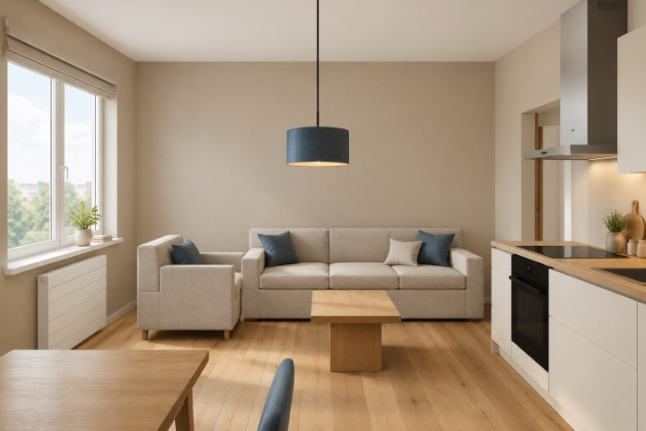

На реальных проектах
Где это посмотреть в альбомах
Альбомы открыты целиком: каждый лист увеличивается, к любому можно оставить правку голосом.
Развёртка — самый полезный и самый часто пропускаемый лист альбома. Объясняем, что на ней изображено, какие размеры обязательны и как по ней проверить решение до начала работ.

План отвечает на вопрос «где», развёртка — «на какой высоте».
из этой статьиРазвёртка — это вид на стену изнутри помещения, спроецированный на плоскость. План отвечает на вопрос «где», развёртка — «на какой высоте». Комплект на помещение — четыре развёртки, по стенам A, B, C, D; в альбоме их связывает отдельный план обозначения развёрток, где к каждой стене подписан номер листа.
Горизонтальные и вертикальные цепочки размеров. Горизонтальная привязывает проёмы, мебель и оборудование к углам, вертикальная — к чистому полу.
Отметки уровня знаком по ГОСТ Р 21.101-2020: чистый пол 0,000, низ потолка, верх мебели, низ карниза.
Фронты мебели. Не «условный прямоугольник», а фактические створки, полки и ручки: по развёртке видно, что шкаф не перекрывает выключатель.
Раскладка плитки в мокрых зонах со стартовым рядом и подрезкой, плюс ведомость количества.
Привязки электрики — выключатели, розетки, вывод под бра: в формате L/H от угла и от пола.
Развёртки интерьера выполняют в масштабах ряда ГОСТ 2.302-68; ГОСТ 21.507-81 (п. 8) называет для видов и развёрток диапазон 1:50–1:500. На практике для жилых помещений берут 1:50, а при насыщенном фронте — крупнее, 1:40 или 1:25: чем крупнее, тем больше деталей читается без лупы. Масштаб указан в штампе и обязан совпадать с фактической геометрией — на наших листах для контроля печатается отрезок 1000 мм.
Пройдите по четырём вопросам. Совпадают ли высоты мебели с тем, как вы ей пользуетесь: верх шкафа, полка над столом, изголовье. Не попадает ли выключатель за открытую створку. Начинается ли плитка от видимого угла целым рядом, а не подрезкой. Есть ли размер от пола до низа каждого элемента — если высоты нет, её определит бригадир.
Посмотреть живой лист: развёртка кухонного фронта квартиры 56 м² — его можно увеличить и оставить к нему правку голосом.
Развёртка — самый трудоёмкий лист: её нельзя нарисовать, не приняв решения по всем высотам. Проще выдать визуализацию, где «примерно так и будет». У нас развёртки строит программа из той же геометрии, что и планы, поэтому стена без развёртки не остаётся: в рабочем альбоме квартиры 56 м² — 24 листа развёрток, в альбоме квартиры 58 м² — 20 листов. В альбоме для заказчика перед листом развёртки стоит визуализация этой стены, сверенная с планом, — чертёж и картинка рядом.
Альбомы открыты целиком: каждый лист увеличивается, к любому можно оставить правку голосом.
Четыре — по числу стен. Экономия «нарисуем только акцентную стену» означает, что по остальным трём решений нет.
Нет. Визуализация показывает впечатление, развёртка — размеры. По визуализации нельзя резать плитку и вешать шкаф.
Да: именно на развёртке видно, что покупной шкаф 2400 мм не встаёт под натяжной потолок 2450 мм с карнизом.
План, картинки, которые нравятся, и пара слов о том, как вы живёте. Сумма считается сразу по площади из брифа: 2 000 ₽/м² × площадь, не меньше 80 000 ₽. Подтверждаем её в заказе до оплаты; проект начинается после оплаты.
Автор проекта — дизайнер-архитектор Кырлан Александр. Фамилия автора стоит в основной надписи каждого листа, телефон — на странице контактов.